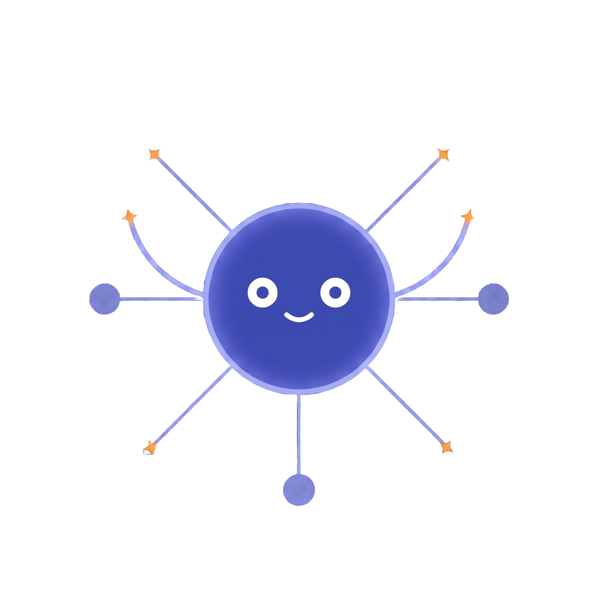
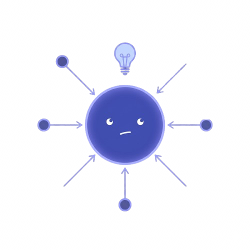
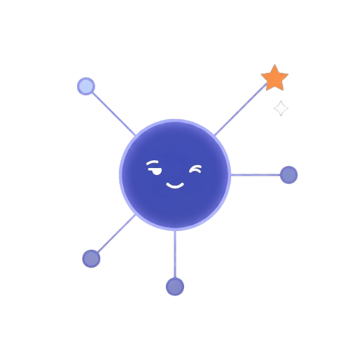
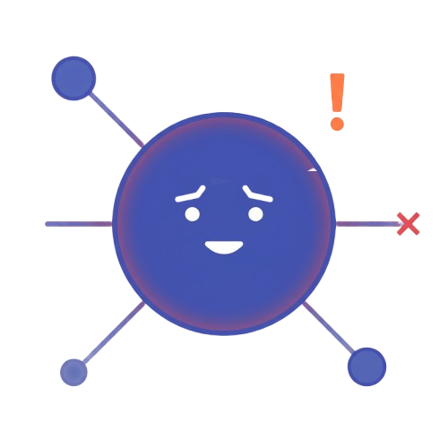
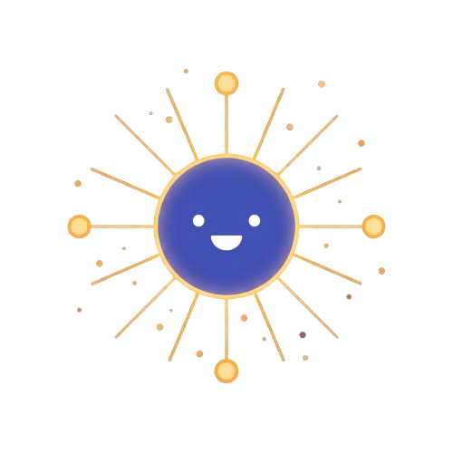

Chapter 24: Advanced GNN Topics: In-Context Learning and Uncertainty¶
Part 6: Frontiers
Summary¶
Covers advanced learning paradigms for GNNs: self-supervised learning, Deep Graph Infomax, graph contrastive learning, in-context learning via PRODIGY, and uncertainty quantification.
Concepts Covered¶
This chapter covers the following 7 concepts from the learning graph:
- In-Context Learning (Graphs)
- Conformalized GNN
- One-For-All (OFA) Model
- Deep Graph Infomax (DGI)
- Graph Contrastive Learning
- Contrastive Loss
- Graph Augmentation (SSL)
Prerequisites¶
This chapter builds on:
- Chapter 6: GNN Foundations: Message Passing and GCN
- Chapter 7: GNN Design Space: GraphSAGE and GAT
- Chapter 8: GNN Training, Augmentation, and Practical Tips
- Chapter 9: Theory of GNNs: Expressiveness and the WL Test
- Chapter 10: Designing Powerful Encoders: GIN and Beyond
- Chapter 11: Graph Transformers
- Chapter 23: LLMs and GNNs: Text-Attributed Graphs and Joint Training
24.1 Learning Without Labels¶
Welcome to Chapter 24

Welcome to Chapter 24! Everything you have built so far — GCN, GAT, GIN, Graph Transformers — has assumed one thing: labeled training data. You have a graph, you have labels for some nodes or graphs, and you optimize a model to predict those labels. But what if labels are expensive, scarce, or simply unavailable? This chapter explores what GNNs can learn from the structure itself, without any human-provided labels. It also tackles a problem that standard GNNs completely ignore: how confident should I be in my prediction? These two questions — learning without labels, and knowing what you do not know — define the frontier of practically reliable GNNs.Labels are expensive in almost every real-world domain that matters. Annotating a protein's function requires biochemical experiments. Labeling a financial transaction as fraudulent requires legal investigation. Classifying medical images requires radiologist review. In many graph datasets, fewer than 1% of nodes carry labels. The remaining 99% are unlabeled — but they are not useless. The graph structure itself, the patterns of connections and neighborhoods, encodes an enormous amount of information about what nodes are similar to each other and what communities they belong to. Self-supervised learning (SSL) extracts this information through pretext tasks that create their own supervision signal from the data's structure, without requiring any human annotation.
This chapter covers three layers of the advanced GNN landscape. It begins with the two main families of self-supervised learning on graphs: Deep Graph Infomax (DGI), which learns by maximizing mutual information between local and global representations, and graph contrastive learning, which learns by making augmented views of the same graph agree with each other. It then covers in-context learning for graphs via PRODIGY, which addresses the complementary problem of adapting a pre-trained model to new tasks without fine-tuning. Finally, it covers conformalized GNNs, which wrap any trained GNN in a statistically rigorous uncertainty quantifier that works without retraining the model.
24.2 Self-Supervised Learning: Motivation and Structure¶
To understand why self-supervised learning works, it helps to think about what makes node embeddings useful. A good node embedding \( \mathbf{z}_v \) should place nodes with similar roles or similar neighborhoods close together in embedding space. In supervised learning, this constraint comes from labels — nodes with the same label are pushed toward the same region. In self-supervised learning, this constraint comes from pretext tasks — carefully designed auxiliary objectives that enforce structural consistency without labels.
Before examining specific methods, here are the three core ideas that virtually all graph SSL methods share:
- Invariance to augmentation: Two different "views" of the same node (obtained by augmenting the graph in different ways) should produce similar embeddings, because they represent the same underlying entity.
- Discrimination across nodes: A node's embedding should be distinguishable from the embeddings of randomly selected other nodes, which ensures the representation carries information rather than collapsing to a constant.
- Structural context: The embedding of a node should reflect its local neighborhood, because the neighborhood encodes the node's functional role in the graph.
These three ideas manifest differently in DGI versus contrastive learning, as we will see.
24.3 Deep Graph Infomax (DGI)¶
Deep Graph Infomax (DGI, Veličković et al. 2019) takes a mutual information perspective. The key idea is that a good node-level encoder should produce representations whose local (node-level) summary is maximally informative about the global (graph-level) summary — and vice versa. If the local representation of a node does not tell you much about the overall graph, the encoder has failed to capture the node's role in the global structure.
24.3.1 Mutual Information and Graph Representations¶
Let \( \mathbf{h}_v = \text{GNN}(G, v) \) denote the embedding of node \( v \) produced by a GNN encoder on graph \( G \). Let \( \mathbf{s} = \text{READOUT}(\{\mathbf{h}_v : v \in V\}) \) denote a summary vector of the entire graph, obtained by averaging or max-pooling all node embeddings. DGI trains the encoder to maximize:
the mutual information between a node's representation and the graph summary. Directly maximizing mutual information in high dimensions is computationally intractable. DGI uses the Jensen-Shannon Mutual Information Estimator (JSD), which lower-bounds the true mutual information and can be optimized with a binary classifier.
24.3.2 The Positive and Negative Sampling Strategy¶
DGI creates positive and negative samples through a simple graph corruption procedure. For a real graph \( G = (V, E, X) \), DGI generates a corrupted graph \( \tilde{G} \) by randomly shuffling the node feature matrix \( X \) — assigning each node's features to a randomly chosen different node. The corrupted graph has the same structure but scrambled features, making its node representations semantically incoherent.
DGI then trains a discriminator \( D : \mathbb{R}^d \times \mathbb{R}^d \to [0, 1] \) that takes a node embedding and a graph summary and outputs the probability that the node came from the original (not corrupted) graph:
where \( \tilde{\mathbf{h}}_v \) is the embedding of a node from the corrupted graph. The encoder learns to produce node embeddings that are maximally consistent with the global graph summary, while the corrupted embeddings fail the discriminator.
Before examining the implementation below, note two things about the code structure: DGI wraps a GNN encoder (any standard PyG layer stack) alongside a bilinear discriminator; corruption shuffles the node feature rows in-place, creating the negative samples without any additional data.
import torch
import torch.nn as nn
from torch_geometric.nn import GCNConv, DeepGraphInfomax
# Define the GNN encoder used inside DGI
class GCNEncoder(nn.Module):
def __init__(self, in_channels, hidden_channels):
super().__init__()
self.conv1 = GCNConv(in_channels, hidden_channels)
self.conv2 = GCNConv(hidden_channels, hidden_channels)
def forward(self, x, edge_index):
x = torch.relu(self.conv1(x, edge_index))
return self.conv2(x, edge_index)
# DGI wraps the encoder and handles corruption + discrimination
def corruption(x, edge_index):
# Shuffle node features to create the corrupted view
return x[torch.randperm(x.size(0))], edge_index
model = DeepGraphInfomax(
hidden_channels=512,
encoder=GCNEncoder(in_channels=dataset.num_features,
hidden_channels=512),
summary=lambda z, *args, **kwargs: torch.sigmoid(z.mean(dim=0)),
corruption=corruption,
)
# Train without any labels
optimizer = torch.optim.Adam(model.parameters(), lr=0.001)
for epoch in range(300):
model.train()
optimizer.zero_grad()
pos_z, neg_z, summary = model(data.x, data.edge_index)
loss = model.loss(pos_z, neg_z, summary)
loss.backward()
optimizer.step()
# After training: extract node embeddings for downstream tasks
model.eval()
z, _, _ = model(data.x, data.edge_index)
# z is now a [N, 512] matrix of unsupervised node representations
After DGI pre-training, the node embeddings \( \mathbf{z}_v \) can be used for any downstream task — node classification, link prediction, clustering — by training a simple linear classifier on top of the frozen embeddings. DGI consistently outperforms random initialization and often approaches fully supervised performance on datasets where labels are scarce.
Why Corruption Works

The corruption strategy might seem surprising — why does shuffling features produce useful self-supervision? The answer is that a node's features and its graph-structural position are co-informative: in a real citation network, a paper's abstract tells you something about which other papers it will cite, and the citation structure tells you something about the paper's topic. Shuffling destroys this alignment. An encoder that can reliably detect "this node's features are inconsistent with its neighborhood" has necessarily learned to encode both the features and the structural context together — which is exactly what you want from a general-purpose node embedding.24.4 Graph Contrastive Learning¶
Graph contrastive learning takes a different approach to self-supervised representation learning, drawing from the contrastive SSL literature developed for images (SimCLR, MoCo). The core idea is to create two augmented views of the same graph — two slightly different versions of the same structure — and train the encoder so that the representations of the two views are close to each other, while representations of different graphs are pushed apart.
24.4.1 Graph Augmentation Strategies¶
Graph augmentation refers to the set of structure-preserving transformations applied to a graph to produce a new view. Two key requirements govern a good graph augmentation: it must preserve the graph's semantic meaning (so the two views still represent the same entity), and it must introduce enough variation that the encoder cannot trivially match views by memorizing individual graphs.
The most widely used graph augmentation strategies are:
- Node feature masking: randomly set a fraction (typically 10–30%) of feature dimensions to zero for randomly chosen nodes. The encoder must infer the missing features from structural context.
- Edge dropout: randomly remove a fraction (typically 10–20%) of edges. The encoder must be robust to missing edges and rely on the remaining neighborhood context.
- Node dropout: randomly remove a subset of nodes and their associated edges. Encourages the encoder to build representations that are not over-reliant on specific neighbor identities.
- Subgraph sampling: extract a random subgraph (e.g., a random walk-induced subgraph) as one view. This is a strong augmentation used in methods like GraphSAINT-based SSL.
- Diffusion-based augmentation: replace the adjacency matrix with a diffusion matrix (e.g., personalized PageRank), which smooths the neighborhood structure and provides a structurally complementary view.
Two views are typically generated by independently applying augmentation to the same graph twice, producing \( G_1 \) and \( G_2 \). The encoder \( f \) maps each view to a node embedding, and a projection head \( g \) maps the embedding to a lower-dimensional representation used in the loss.
24.4.2 The Contrastive Loss¶
The contrastive loss (specifically the InfoNCE / NT-Xent loss) is the optimization objective that enforces agreement between views of the same graph and disagreement between views of different graphs. For a set of \( N \) graphs in a batch, the contrastive loss for a single positive pair \( (z_i, z_j) \) — where \( z_i = g(f(G_1^{(i)})) \) and \( z_j = g(f(G_2^{(i)})) \) are the projected embeddings of the two augmented views of the same graph — is:
where \( \text{sim}(u, v) = u^\top v / (\|u\| \|v\|) \) is cosine similarity and \( \tau > 0 \) is a temperature hyperparameter controlling how sharply the distribution is peaked. The denominator sums over all \( 2N - 1 \) other embeddings in the batch (both augmentations of all other graphs), treating them as negatives. The loss encourages the positive pair to have high cosine similarity and the negative pairs to have low similarity.
The complete batch loss averages over all positive pairs:
Before examining the implementation, note that the code below computes the contrastive loss from scratch using standard PyTorch operations: F.normalize applies L2 normalization so the dot product equals cosine similarity; the temperature tau controls sharpness; the diagonal of the similarity matrix (same-view comparisons) is masked out.
import torch
import torch.nn.functional as F
def contrastive_loss(z1, z2, tau=0.5):
"""
Compute NT-Xent contrastive loss.
z1, z2: [N, d] projected embeddings of two augmented views
tau: temperature (smaller = sharper distribution, default 0.5)
"""
# L2-normalize so dot product = cosine similarity
z1 = F.normalize(z1, dim=1)
z2 = F.normalize(z2, dim=1)
# Concatenate: [2N, d]
z = torch.cat([z1, z2], dim=0)
# Similarity matrix: [2N, 2N]
sim = torch.mm(z, z.T) / tau
# Mask diagonal (self-similarity)
N = z1.size(0)
mask = torch.eye(2 * N, dtype=torch.bool, device=z.device)
sim.masked_fill_(mask, float('-inf'))
# Positive pairs: (i, i+N) and (i+N, i)
labels = torch.cat([torch.arange(N, 2*N), torch.arange(0, N)]).to(z.device)
# Cross-entropy over the 2N-1 candidates
loss = F.cross_entropy(sim, labels)
return loss
GraphCL (You et al. 2020) applies this framework to molecular graphs and social networks, demonstrating that contrastive pre-training with simple augmentations consistently improves downstream performance across benchmarks. GRACE (Zhu et al. 2020) applies the same framework at the node level rather than the graph level, producing per-node embeddings by contrasting node representations across two augmented views of the same graph.
Diagram: Graph Contrastive Learning — Two-View Pipeline¶
Run Graph Contrastive Learning — Two-View Pipeline Fullscreen
The following table summarizes the augmentation strategies discussed above, organized by what they transform and what structural invariance they encourage. All strategies have been explained in prose before this table.
| Augmentation | What Changes | What Stays | Typical Drop/Mask Rate | Good For |
|---|---|---|---|---|
| Edge dropout | Subset of edges removed | Node features, graph topology (mostly) | 10–20% | Robust neighborhood representations |
| Feature masking | Subset of feature dims zeroed | All edges, remaining features | 10–30% | Representations robust to missing attributes |
| Node dropout | Subset of nodes + edges removed | Remaining subgraph | 5–15% | Representations not tied to specific neighbors |
| Subgraph sampling | Most of graph removed | Random walk subgraph | Varies | Hierarchical structural patterns |
| Diffusion augmentation | Adjacency → diffusion matrix | Node features | N/A | Multi-hop structural views |
24.5 In-Context Learning for Graphs¶
Chapter 23 introduced the concept of graph foundation models and mentioned PRODIGY briefly in the context of LLM+GNN integration. This section covers PRODIGY's mechanism in technical depth, because the in-context learning paradigm it instantiates is broader than any specific LLM+GNN system — it applies to any pre-trained GNN backbone.
24.5.1 The Problem: Task Adaptation Without Fine-Tuning¶
Standard GNNs are trained on a fixed task — for example, node classification into 40 categories on ogbn-arxiv. When you encounter a new task — say, classifying nodes into 3 different categories on a new citation network — you must fine-tune the model on labeled data from the new task. This requires labeled examples and gradient updates.
In-context learning (ICL) circumvents fine-tuning by providing the model with labeled examples directly as input, alongside the query to be predicted. In the language domain, this is GPT's few-shot capability: you prepend examples to the prompt, and GPT generalizes from them without any weight updates. The question PRODIGY answers is: how do you give a GNN "examples in the context" when the GNN's input is a graph, not a text string?
24.5.2 Prompt Graphs¶
PRODIGY's answer is the prompt graph — an augmented input graph that encodes both the few-shot examples (support set) and the query nodes in a single unified graph structure.
Given a new task with: - A task graph \( G = (V, E) \) — the graph on which you want to make predictions - A support set \( S = \{(v_1, y_1), \ldots, (v_k, y_k)\} \) — \( k \) labeled example nodes - A query node \( q \) — the node you want to classify
PRODIGY constructs a prompt graph \( G_{\text{prompt}} = G \cup G_S \cup G_\text{conn} \) where: - \( G_S \) contains one task node per class, connected to all support nodes of that class - \( G_\text{conn} \) contains edges connecting the query node \( q \) to all task nodes, allowing the GNN to propagate information from support examples to the query
The GNN then runs message passing on the entire prompt graph, and the query node's final embedding aggregates information from both the task graph structure and the labeled support examples. Prediction follows directly from the query node embedding:
where \( \mathbf{h}_{\text{task}_c}^{(\text{prompt})} \) is the embedding of the task node for class \( c \), and similarity is cosine similarity. The prediction is the class whose task node is closest to the query node in embedding space — without any gradient updates.
ICL vs. Fine-Tuning: A Practical Guide

Use in-context learning when: (1) you have a pre-trained backbone but very few labeled examples on a new task (fewer than 50), (2) you need to deploy quickly without re-training, or (3) you are evaluating generalization to tasks not seen during pre-training. Use fine-tuning when: (1) you have hundreds or thousands of labeled examples, (2) the new task is substantially different from pre-training tasks (large distribution shift), or (3) latency is critical and you need the fastest possible inference path. ICL and fine-tuning are complementary, not competing — a common strategy is to do ICL first to estimate if a task is worth fine-tuning.24.6 Conformalized GNNs: Knowing What You Do Not Know¶
Standard GNNs output a probability distribution over classes via a softmax layer. However, these probabilities are not calibrated — a GNN that outputs a 90% confidence for a node classification is not necessarily right 90% of the time. GNNs, like other deep learning models, can be confidently wrong: outputting high softmax probabilities for examples that are far from the training distribution.
Conformal prediction is a statistical framework that wraps any trained model (including GNNs) and produces prediction sets with a provable coverage guarantee — without retraining or modifying the model. Given a user-specified error rate \( \alpha \), conformal prediction guarantees:
where \( C(x) \) is the prediction set for input \( x \) and \( y \) is the true label. If you set \( \alpha = 0.1 \), the prediction set contains the true label at least 90% of the time, regardless of the model's internal calibration. This guarantee holds under only one assumption: the calibration and test data are exchangeable (a weaker requirement than i.i.d.).
24.6.1 How Conformal Prediction Works¶
Conformal prediction requires a calibration set — a held-out set of labeled nodes not used during training — and a nonconformity score function that measures how "surprising" a label is given a model's prediction.
For a GNN with softmax output \( \hat{p}(y \mid v) \), the standard nonconformity score for node \( v \) and true label \( y \) is:
A low nonconformity score means the model assigned high probability to the true label (not surprising). A high score means the model was wrong or uncertain.
Given the calibration set, compute the nonconformity scores for all calibration nodes. The conformal threshold \( \hat{q} \) is set to the \( \lceil (1-\alpha)(n+1)/n \rceil \)-th quantile of the calibration scores. For a new test node \( v_{\text{test}} \), the prediction set is:
In plain language: include all labels whose softmax probability is at least \( 1 - \hat{q} \). If the GNN is confident about a single class, the prediction set has size 1. If the GNN is uncertain, the prediction set includes multiple candidate classes. The size of the prediction set is itself a measure of uncertainty — a large prediction set signals that the model does not know the answer.
24.6.2 DAPS: Diffusion Adaptive Prediction Sets¶
Naive conformal prediction treats each node independently, ignoring graph structure. DAPS (Diffusion Adaptive Prediction Sets, Huang et al. 2023) improves prediction sets on graphs by incorporating neighborhood information during calibration.
The key insight is that in a citation network, a paper's true category is correlated with its neighbors' categories. If all of a node's neighbors are confidently classified as "Machine Learning," a wider prediction set that includes "Computer Vision" is probably unnecessary. DAPS adjusts the nonconformity scores by smoothing them over the graph using a diffusion operator:
where \( D \) is a diffusion matrix (e.g., the normalized graph Laplacian's eigenvector matrix or a personalized PageRank matrix). The smoothed scores benefit from the structural correlations in the graph, producing tighter prediction sets while maintaining the same coverage guarantee.
The following code shows how to apply conformal prediction on top of a trained GNN using a simple calibration procedure. The three key parameters are: alpha (the error rate — 0.1 means 90% coverage), the calibration node mask, and the trained GNN's softmax probabilities.
import torch
def conformal_prediction_sets(softmax_probs, labels, calib_mask, test_mask, alpha=0.1):
"""
Compute conformal prediction sets for a trained GNN.
softmax_probs: [N, C] tensor from GNN (after softmax)
labels: [N] true labels (integers 0..C-1)
calib_mask: boolean mask for calibration nodes
test_mask: boolean mask for test nodes
alpha: error rate (0.1 = 90% marginal coverage guarantee)
"""
# Nonconformity scores on calibration set
calib_probs = softmax_probs[calib_mask] # [n_calib, C]
calib_labels = labels[calib_mask] # [n_calib]
# Score = 1 - probability assigned to the true label
calib_scores = 1.0 - calib_probs[torch.arange(len(calib_labels)), calib_labels]
# Conformal quantile (with finite-sample correction)
n = len(calib_scores)
quantile_level = min(1.0, (1 - alpha) * (n + 1) / n)
q_hat = torch.quantile(calib_scores, quantile_level)
# Prediction sets for test nodes
test_probs = softmax_probs[test_mask] # [n_test, C]
# Include class y if (1 - p(y|v)) <= q_hat, i.e., p(y|v) >= 1 - q_hat
prediction_sets = test_probs >= (1.0 - q_hat) # [n_test, C], boolean
set_sizes = prediction_sets.sum(dim=1).float()
print(f"Conformal threshold q_hat: {q_hat:.3f}")
print(f"Mean prediction set size: {set_sizes.mean():.2f}")
print(f"Fraction with singleton set: {(set_sizes == 1).float().mean():.3f}")
return prediction_sets
# Example usage on a trained GNN
with torch.no_grad():
logits = trained_gnn(data.x, data.edge_index)
probs = torch.softmax(logits, dim=1)
pred_sets = conformal_prediction_sets(
probs, data.y, data.calib_mask, data.test_mask, alpha=0.1
)
The Coverage Guarantee Is Marginal, Not Per-Node

The conformal prediction guarantee states that the average coverage across all test nodes is at least \( 1 - \alpha \). This is called marginal coverage. It does not guarantee that every individual node's prediction set contains the true label with probability \( 1 - \alpha \). Some nodes — particularly those far from the training distribution or in underrepresented communities — may have empirical coverage much below the target. DAPS and related methods address this by stratifying calibration by neighborhood type, improving coverage for specific subpopulations. Always check per-group coverage in addition to marginal coverage when deploying conformalized GNNs.24.7 The One-For-All (OFA) Model in Depth¶
Chapter 23 introduced OFA as a graph foundation model that routes all graph modalities through a shared natural language space. This section revisits OFA through the lens of the three challenges it addresses — which connects it to the self-supervised and in-context learning ideas developed earlier in this chapter.
OFA's three technical innovations correspond directly to the three fundamental obstacles to graph foundation models:
For feature heterogeneity: OFA uses a text encoder (a frozen LLM) to convert all node attributes to a shared embedding space. This is conceptually similar to DGI's approach of learning a universal representation — but OFA uses language rather than self-supervised objectives as the universal channel.
For task heterogeneity: OFA represents tasks themselves as text, using what it calls context nodes — virtual nodes added to the graph whose text descriptions encode the task instruction. A node classification task becomes "classify this node into one of these categories"; a link prediction task becomes "predict whether an edge exists between these two nodes." The GNN processes context nodes alongside regular nodes and attends to their text features to determine what type of output to produce.
For structural diversity: OFA trains on a diverse collection of graphs simultaneously — citation networks, molecular graphs, knowledge graphs — and uses the shared text encoding to align their feature spaces. The resulting model has seen enough structural variation during training that it generalizes to new graph types without retraining.
The following table compares OFA, PRODIGY, and a standard supervised GNN across key dimensions, reinforcing the distinctions explained in prose above.
| Dimension | Supervised GNN | PRODIGY (ICL) | OFA (Foundation) |
|---|---|---|---|
| Labeled data required | Yes (many) | Yes (few, at inference) | Pre-training only |
| New task adaptation | Fine-tuning | Prompt graph construction | Context node insertion |
| Cross-dataset transfer | No | Limited | Yes |
| Feature space | Fixed | Fixed | Unified (via LLM text) |
| Training complexity | Low | Medium | High (multi-dataset) |
Diagram: DGI vs. Contrastive Learning — Concept Map¶
Run DGI vs. Contrastive Learning — Concept Map Fullscreen
24.8 Benchmark Results¶
The following table presents representative results on standard benchmarks, organized by learning paradigm. Node classification accuracy (%) on ogbn-arxiv is reported for node-level methods; the molecular property prediction AUC on ogbg-molhiv is reported for graph-level methods. All results use publicly reported numbers from 2020–2023.
| Method | Paradigm | ogbn-arxiv Test Acc (%) | ogbg-molhiv AUC |
|---|---|---|---|
| GCN (supervised) | Supervised | 71.7 | 76.1 |
| DGI → linear probe | Self-supervised | 70.3 | 75.3 |
| GRACE → linear probe | Contrastive SSL | 71.2 | — |
| GraphCL → fine-tuned | Contrastive SSL | 72.8 | 78.6 |
| PRODIGY (5-shot) | In-context | 68.4 | — |
| DAPS (conformalized GCN) | Uncertainty | 71.7 + coverage ≥ 90% | — |
| OFA (zero-shot) | Foundation | 73.5 | 79.1 |
The table reveals an important pattern: self-supervised methods approach supervised performance on node classification when using a linear probe, and often surpass it when fine-tuned on the downstream task. PRODIGY in 5-shot mode is competitive despite having no labeled data from the target task. OFA achieves the highest accuracy despite requiring no task-specific training — its advantage comes from its multi-dataset pre-training.
24.9 Common Pitfalls¶
Confusing the corruption signal with the task signal in DGI. DGI shuffles node features to create negative samples — but this corruption must be purely random. If the corruption procedure inadvertently preserves some structural signal (for example, by shuffling only within communities), the discriminator task becomes trivial and the encoder learns nothing. Always verify that corrupted graphs are semantically incoherent by checking that a simple GNN cannot distinguish them from real graphs better than chance.
Choosing augmentations without considering the task. Graph augmentation strategies are not interchangeable. Edge dropout is appropriate when the downstream task depends on local neighborhood structure (e.g., node classification in citation networks). It is harmful when the task depends on specific edges (e.g., link prediction — dropping edges during pre-training teaches the encoder to ignore exactly the information needed for prediction). Always choose augmentations that are semantically consistent with the target task.
Applying conformal prediction to non-exchangeable test sets. The conformal coverage guarantee requires that calibration and test data are exchangeable — roughly, drawn from the same distribution in a way that the ordering does not matter. On graphs with temporal structure (e.g., dynamic citation networks where you calibrate on 2022 papers and test on 2023 papers), this assumption is violated. DAPS partially addresses this for spatial correlations but not temporal ones. For temporally structured graphs, use time-split calibration.
Treating prediction set size as a confidence score. A prediction set of size 1 means the conformal threshold was crossed by only one class — but this does not mean the GNN is highly accurate for this node. It means the GNN's probability for one class was high enough relative to the calibration threshold. Prediction set size is a coverage instrument, not a reliability score. High accuracy can coexist with large prediction sets (when the model is uncertain about the right answer among a small set of candidates).
Expecting OFA to generalize to arbitrary new graph types. OFA achieves impressive zero-shot generalization across the graph types it was pre-trained on. For graph domains not included in its training mixture (e.g., power grids, road networks, or social networks from non-English-speaking regions), OFA's text-based representations may be poorly calibrated. Zero-shot does not mean universally applicable.
24.10 MicroSim: Contrastive Learning Live Demo¶
Diagram: Contrastive Loss Surface Explorer¶
Run Contrastive Loss Surface Explorer Fullscreen
24.11 Exercises¶
The following twelve exercises span all six levels of Bloom's taxonomy.
Remembering
-
Name the two main self-supervised learning methods covered in this chapter. For each, state what serves as the "supervision signal" in place of human-provided labels.
-
What is the conformal coverage guarantee? Write it as a probability inequality, defining each term.
Understanding
-
Explain the corruption strategy in DGI in your own words. Why does shuffling node features create a useful training signal? What property of real graphs does it exploit?
-
Describe the role of the temperature parameter \( \tau \) in the contrastive loss. What happens when \( \tau \) is very small? What happens when \( \tau \) is very large? Why does each extreme cause problems?
-
Explain the difference between a prediction set and a point prediction. Why might a user prefer a prediction set even when a point prediction is available?
Applying
-
You are building a GNN for protein function prediction, where proteins are nodes and interactions are edges. Only 2% of proteins in your graph have annotated functions. Describe how you would use DGI pre-training followed by fine-tuning on the labeled proteins. What augmentation strategy would you choose for the corruption step, and why?
-
Implement the conformal prediction procedure from Section 24.6.1 for a 3-class node classification problem. Given calibration nonconformity scores
[0.1, 0.3, 0.6, 0.2, 0.7, 0.4, 0.1, 0.5, 0.2, 0.3]and \( \alpha = 0.2 \), compute the conformal threshold \( \hat{q} \) by hand. Show your work.
Analyzing
-
Compare DGI and GraphCL as self-supervised learning methods. In what sense does DGI maximize a global-local agreement and GraphCL maximize a view-view agreement? Can these two objectives conflict? Give a concrete scenario where one method would outperform the other.
-
The contrastive loss has \( 2N - 1 \) negatives per positive pair, where \( N \) is the batch size. Analyze how batch size affects learning: why does a larger batch size generally help contrastive learning? What is the computational cost of this scaling? Is there a diminishing returns effect?
Evaluating
-
A paper proposes a new graph SSL method that uses label information during the augmentation step (for example, it ensures that positive pairs always come from nodes of the same class). This achieves higher downstream accuracy than vanilla GraphCL. Evaluate whether this is genuinely a self-supervised method or a form of supervised learning in disguise. What is the practical consequence of this distinction for deployment in label-scarce settings?
-
DAPS improves conformal prediction sets by smoothing nonconformity scores over the graph. Critique this approach from the perspective of the coverage guarantee: does smoothing preserve the guarantee? Under what graph conditions would smoothing help most? Under what conditions could it hurt?
Creating
- Design a new self-supervised learning method for heterogeneous graphs (graphs with multiple node types and edge types, as in Chapter 15). Your method must: (a) define a pretext task that is meaningful for heterogeneous structure, (b) specify what counts as a "positive pair" and a "negative pair" in your method, (c) describe how your contrastive or discriminative loss would be modified to account for different node and edge types, and (d) predict on which heterogeneous graph benchmark your method would outperform DGI and GraphCL, and why.
24.12 Further Reading¶
Deep Graph Infomax — Veličković et al. (2019). ICLR 2019. The foundational paper for mutual-information-based graph SSL. Section 3 (the DGI formulation) is essential reading; Section 5 (experimental results on citation networks and biological graphs) shows the quality of unsupervised embeddings. Relevant to Section 24.3.
Graph Contrastive Representation Learning (GraphCL) — You et al. (2020). NeurIPS 2020. arXiv:2010.13902. Systematic study of four augmentation strategies (node dropping, edge perturbation, attribute masking, subgraph sampling) on molecular and social network benchmarks. Table 1 (which augmentation works when) is the most practically useful result. Relevant to Section 24.4.
GRACE: Deep Graph Contrastive Representation Learning — Zhu et al. (2020). ICML 2020 Workshop. arXiv:2006.04131. Node-level contrastive SSL — the graph analog of SimCLR. The two-augmentation-two-encoder architecture is the key contribution. Relevant to Section 24.4.
PRODIGY: Enabling In-context Learning Over Graphs — Huang et al. (2023). NeurIPS 2023. arXiv:2305.12600. The prompt graph construction (Section 3.2) and the few-shot evaluation protocol (Section 4.2) are the most important technical sections. Relevant to Section 24.5.
Uncertainty Quantification over Graph with Conformalized Graph Neural Networks — Huang et al. (2023). NeurIPS 2023. arXiv:2305.14535. The DAPS method. Section 3 (the diffusion-smoothed nonconformity score) and Section 4 (the coverage proof) are the core contributions. The experimental section demonstrates tighter prediction sets than naive conformal prediction on ogbn-arxiv and ogbn-products. Relevant to Section 24.6.
A Tutorial on Conformal Prediction — Shafer and Vovk (2008). JMLR. The classical paper explaining conformal prediction from first principles. Sections 1–3 are accessible to readers with a statistics background. Relevant to Section 24.6 for those wanting the theoretical foundation.
One for All: Towards Training One Graph Model for All Classification Tasks — Liu et al. (2023). arXiv:2310.00149. The OFA paper. The context node construction (Section 3.2) and the cross-dataset transfer experiments (Table 3) are the key results. Relevant to Section 24.7.
Chapter 24 Complete!

You have reached the end of Chapter 24 — and with it, covered two of the most important open frontiers in graph machine learning. You now understand how DGI and graph contrastive learning extract rich representations from unlabeled graph data, how graph augmentation strategies create the views that drive contrastive learning, how PRODIGY extends in-context learning to graph-structured inputs, and how conformalized GNNs provide statistically rigorous uncertainty guarantees on top of any trained model. The next chapter brings everything together — agents, planning, and graphs — before the final conclusion synthesizes the full arc of the textbook.